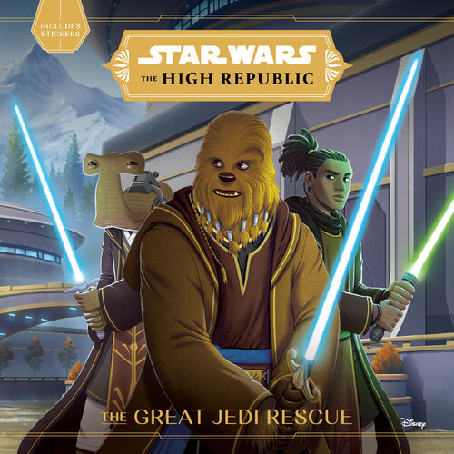
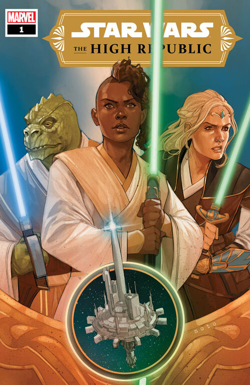
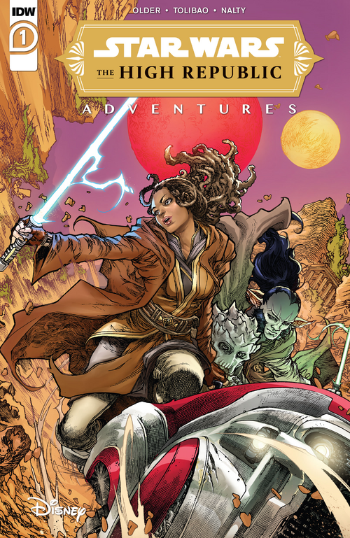
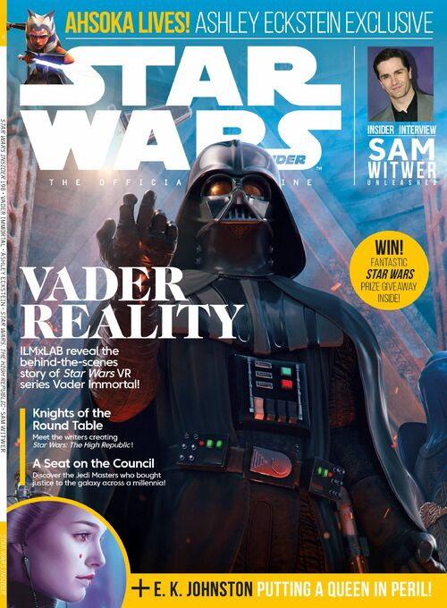
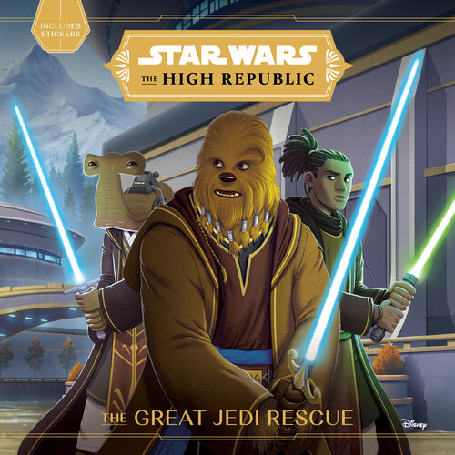
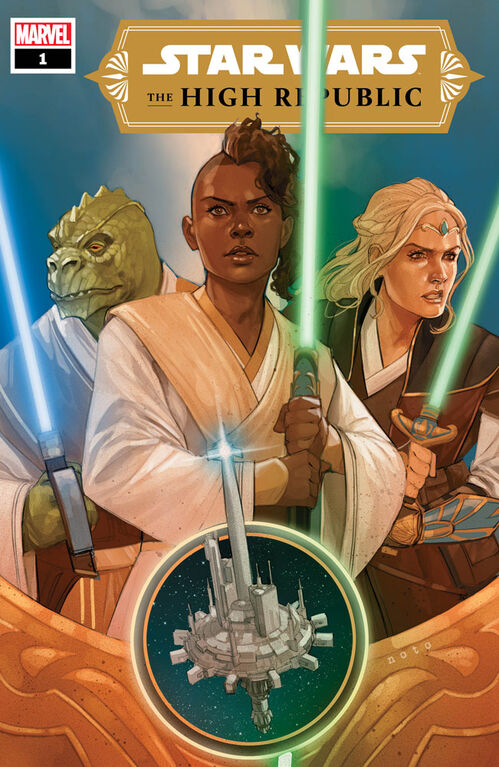
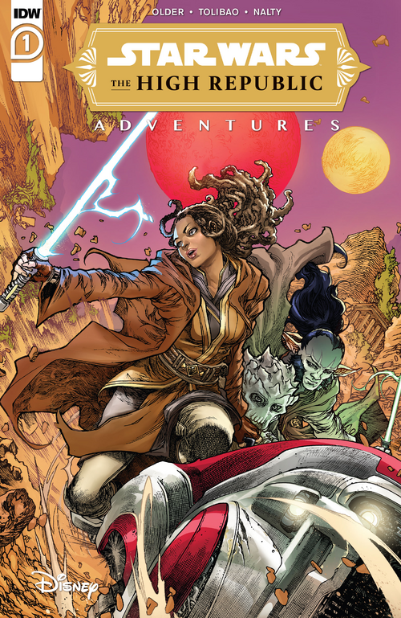
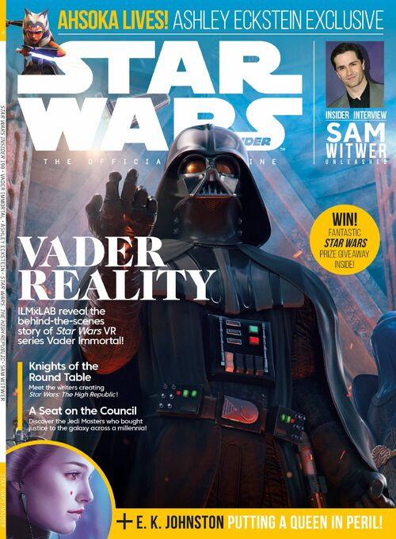

Star Wars: The High Republic
Official Synopsis
Star Wars: The High Republic, which has previously been referred to as “Project Luminous,” will be set in an era when the Galactic Republic and the Jedi Order are at their zenith, about 200 years before the events of Star Wars: The Phantom Menace. This period on the Star Wars timeline will not overlap any of the filmed features or series currently planned for production, giving creators and partners a vast amount of room to tell Star Wars stories with new adventures and original characters.
Organization
The High Republic is split into waves within phases. Three phases have been announced so far:
- Light of the Jedi
- Quest of the Jedi
- Trials of the Jedi
Content
Phase 1: Light of the Jedi is drawing to a close; there is no unnanounced content remaining in this phase, and very little unreleased contents. As of yet, nothing has been announced for Phase 2.
Wave 1
 






